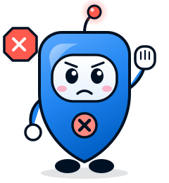

Meet the mascot
Say hello to Shelly.
Shelly is a small shield that checks things before you buy them. Its body is the SafeShelf logo, and its antenna light is the verdict ring: green, amber, red or grey, set by code, never by mood.
Six poses
One Pose for
Every Verdict
Each pose maps to a state the product can actually be in. The light and the chest badge always agree, so a worried Shelly never wears a green tick.


Careful
An amber verdict: copied photos, an impossible price, hazard reports under review.
Download SVG


Stop
A red verdict: a fake shop, a confirmed recall for this exact model. Firm, never scary.
Download SVG

Anatomy
Built From
the Product
- 1
Verdict light
The same four colours as the ring in the extension's rail. Blue only while checking.
- 2
Face panel
A rounded screen, like the rail. Big eyes for "I am looking", not for cute alone.
- 3
Chest badge
Tick, "!" or "?", always matching the light. Only All clear and Hello show the green tick.
- 4
Shield body
The SafeShelf logo shape in brand blue, with a navy outline that holds up small.
Colours
Shelly's Palette
Using Shelly
Shelly Never Overpromises
✓Do
- Show the pose that matches the real verdict.
- Use Checking while a check is running.
- Use Not sure yet whenever the evidence is thin.
- Keep at least a quarter of Shelly's width as clear space.
- Pair Shelly with the evidence, not instead of it.
✕Don't
- Show All clear on a grey or amber result.
- Recolour the light for decoration.
- Put a green tick on a worried Shelly.
- Use Shelly on a recall notice in place of the regulator's words.
- Stretch, rotate or crop the shield.
Shelly Checks
Before You Pay
The same checks, in a friendlier shape.